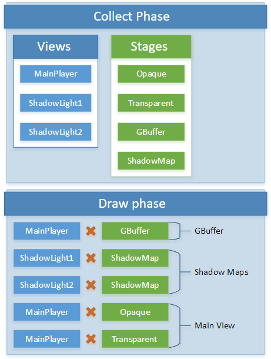

Render features
Warning
Приносим свои извинения за неудобства. Для этой страницы нет перевода на русский язык. Она будет отображаться на английском языке.
A RenderFeature is responsible for drawing a given type of RenderObject.
Render phases
Render features have several phases.
Collect
The collect phase determines what needs to be processed and rendered. It's usually driven by the graphics compositor.
The collect phase:
- creates render views, and updating them with the most recent data such as view and projection matrices
- creates and setting up render stages
- performes visibility culling and sorting
Extract
The extract phase copies data from game states of previously collected objects to short-lived render-specific structures. It's usually driven by the RenderSystem and RenderFeatures.
This should be as fast as possible and avoid heavy computations since game update and scripts are blocked. Heavy computations should be deferred to Prepare.
Note
Currently, Stride doesn't parallelize game updates and scripts, so they won't be resumed until the prepare and draw phases are finished.
Example tasks:
- copying object matrices
- copying material parameters
Prepare
The prepare phase prepares GPU resources and performs heavy computations. This is usually driven by the RenderSystem and RenderFeatures.
Example tasks:
- computing lighting data and structures
- filling constant buffers and resource tables
Draw
The draw phase fills the GPU command list.
Example tasks:
- setting up render textures
- drawing combinations of render stage with render view.
Example
A typical example of views and stages created during collect phase, used during the draw phase:

Pipeline processors
Pipeline processors are classes called when creating the pipeline state. This lets you do things such as enable alpha blending or wireframe rendering in a specific render stage.
Stride includes several predefined pipeline processors. You can also create your own.